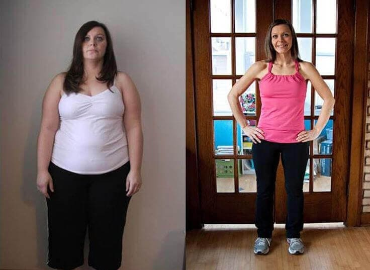

Bonjour à tous! Tout le monde a remarqué que j'ai perdu beaucoup de poids récemment et a commencé à me bombarder de questions . J'ai essayé de mon mieux de répondre à tout le monde et de soutenir chacune de vous, mais je n'y arrive pas, car avec autant de messages à répondre, je devrais vivre en ligne jour et nuit. J'ai donc décidé d'écrire ce post pour répondre à la question: "Comment avez-vous réussi à perdre 31 kg?" (Cela ne veut pas pas dire que je ne veux plus recevoir vos messages. Juste que cela rend ma vie plus facile).
Ma transformation ne m'a pris que DEUX MOIS! LE RÉSULTAT EST POUR LE MOINS ÉTONNANT, n'est-ce pas?

Je n'ai jamais été maigre mais j'ai remarqué que j'avais de plus en plus tendance à prendre de poids. Trois terribles bourrelets sont apparus sur mon ventre, je ressemblais à un bouledogue en bikini, alors que mes hanches, mes jambes et mes fesses devenaient de plus en plus grosses! J’ai décidé de me faire un super corps, beau et sain, coûte que coûte. J'ai donc arrêté de manger des aliments gras, de la friture et j’ai mis une croix sur les dîners copieux. Je me suis mise à courir le matin et j’allais à la gym le soir, mais au lieu de perdre du poids, j’en gagnais de plus en plus! Un mois plus tard, mon poids n’était PAS LOIN DE 100 kg ! Je continuais à faire mon régime qui devenait de plus en plus strict, fini la viande, le pain, les frites et les sucreries. J’ai fini par ne manger que des fruits et des légumes et de boire que de l'eau. J'ai essayé quelques thés et des cachets de perte de poids affreusement chers, mais rien n’a marché . J'ai fini par reprendre tout ce que j'avais perdu et mon organisme était épuisé.
Les régimes et les cachets ne marchent pas, c’est une arnaque!
Les exercices physiques étaient
trop durs et nécessitaient trop de temps avant de voir les premiers résultats. Donc que devais-je faire?
Après avoir essayé tant de régimes et de cachets et après avoir dépensé une fortune pour se payer des coaches, j’ai laissé tomber. Un jour je suis tombée sur un article sur et j’ai décidé de tenter ma chance. Bien que j’aie entendu que Demi Moore, Katy Perry, J-Lo et beaucoup de célébrités retrouvaient leur minceur avec ces baies, j'étais sceptique. Mais pour avoir tout essayé, je commençais à désespérer. Je n'avais pas le choix! D'ailleurs, j’ai lu les commentaires et ils étaient vraiment impressionnants!
Des millions de femmes en Europe et aux États-Unis se sont débarrassées de l'embonpoint grâce à . Selon les sondages, 96,7% ont perdu 12-17 kg en trois semaines!
Donc, c’était décidé! Je suis allée leur site web j'ai tout lu et relu et j’ai passé la commande. Le colis est arrivé deux semaines plus tard. J’ai lu la notice et j’ai commencé la cure en dissolvant une cuillère à café de cette poudre dans 150 ml d'eau et à prendre une fois par jour.
Résultats
Deux semaines plus tard, j'ai observé les résultats spectaculaires - j'ai perdu 6 kg! Mon corps a dégonflé et mon teint s'est nettement amélioré! Je suis devenue plus svelte aux hanches et au ventre, j'avais la pêche et j'étais de bonne humeur! J’ai retrouvé l'espoir de redevenir belle sans régime ni exercice! J'ai donc continué à manger tout ce que je voulais ! J'en avais ras-le-bol de me crever au gymnase et d'avoir tout le temps faim...
À la fin de la troisième semaine, j'ai perdu 12 kg supplémentaires! Je suis devenue plus en forme et cela m'a encouragée à monter les escaliers au lieu d'utiliser l'ascenseur à chaque fois. Ce qui semblait être une corvée auparavant est devenu un vrai plaisir! C’était difficile à croire que ce qui m’arrivait étais juste parce que je suivais les recommandations écrite sur la boîte de ce complément! Si moi j’ai pu le faire, tout le monde le peut! Deux mois sont passé rapidement et 31 kilos étaient partis!!
J'ai atteint mon objectif de poids en 60 jours. Le gros ventre d'autrefois n’est plus qu’un cauchemar du passé. J'ai perdu 31 kg et désormais j’ai le corps dont je n'ai jamais osé rêver! !
D'ailleurs, a été testé par l'Académie nationale des sciences en 2014. Les résultats auraient fait l’effet d’une bombe, mais ils n’sont jamais été rendus publics. Sinon cela aurait entraîné la faillite des labos pharmaceutiques, des clubs de sport ainsi que des nutritionnistes et des cliniques avec leurs prestations hors de prix! ! Pas étonnant, car est vraiment pas cher!

Désormais, je recommande à mes amis et mes collèges. Mais attention, ne commandez que sur le site officiel sinon vous risquez de recevoir un produit contrefait. Je me réjouis de mes résultats et je crois que vous y arriverez à votre tour! Oubliez les clichés: on n'a pas besoin de régimes et d'entraînement pour avoir une belle silhouette!
P.S. Celles et ceux qui ont perdu du poids en buvant du , n'hésitez pas à partager vos témoignages ici! Ainsi, on encouragera les autres car c'est vraiment important d'y croire! Bonne chance!
J'ai une bonne nouvelle à annoncer! Les représentants de m'ont contacté pour offrir une remise de 50% aux 100 premiers visiteurs de mon blog qui passeront leur commande ici!
commentaires
Chère Isabelle, merci de m'avoir motivée. Grâce à vous, je me suis débarrassée de cet abominable surpoids! En trois semaines j'ai perdu 28 kg. Aujourd'hui je pèse 57 kg, et comme vous l'aviez promis, pas de yo-yo. Merci infiniment, Cathy.
Je rêve d'un corps mince depuis très longtemps, j‘ai lu à propos sur cette page il y a trois mois. J'hésitais à commander mais je me suis laissé convaincre par ma mère. Ce n’est pas un grand prix à payer pour un rêve devenu réalité! Maintenant, nous maigrissons ensemble. Ça marche mieux pou elle d’ailleurs= (
Je suis super contente d'avoir trouvé ce blog. Je vais certainement essayer ce complément ! Merci
Bonjour, j'ai suivi ces conseils et j’ai essayé et bien…tu as réellement sauvé ma famille et mon mariage =) T’es extraordinaire! Mon mari a beaucoup changé envers moi récemment, j'ai regagné la confiance en moi ... J'ai la PÊCHE! =)
Les filles, je rejoins votre équipe slim-team bientôt !! Je viens de recevoir mon Merci de partager vos résultats, ils m’ont motivée pour commencer la cure. J'espère que je vais enfin me débarrasser de toute cette graisse. Je vais partager mes résultats plus tard, biz
Bonjour Nicole, je me réjouis pour toi! Le plus important c'est l'harmonie intérieure mais elle est impossible sans vivre en harmonie avec son propre corps. Je suis impatiente de voir tes premiers résultats. Et rappelle-toi: mieux vaut un petit progrès que pas de progrès du tout! Bonne chance!
Cher Isabelle, quelle chance d'avoir trouvé votre site car je suis à la recherche du soutien. J'ai essayé de nombreuses méthodes minceur, mais malheureusement, mes résultats n’ont pas été à la hauteur de mes attentes. Je mesure 152 cm et je pèse 97 kg, c'est une honte !!! Je dois perdre au moins 36 kg et est mon dernier espoir ...
Bonjour Caroline! Je ne suis pas la seule à devenir svelte avec ce complément Mes amies l'ont également essayée et ÇA MARCHE. Donc je te garantis à 100%, tu ne seras pas déçue à nouveau. Nous sommes toutes satisfaites de nos résultats et on vous souhaite la même chose!
Mesdames, je voudrais vous demander encore une fois, s'il vous plaît, prenez quelques minutes pour parler de vos résultats parce que c’est très important pour les autres! Peut être c’est votre message qui persuadera une autre femme à devenir mince, belle et heureuse !!
Je l'ai reçu hier et ma nouvelle vie commence aujourd'hui! J’ai hâte de voir mes premiers résultats)
Cher Isabelle! Merci beaucoup! J'ai perdu du poids très rapidement mais surtout, il ne revient plus, comme avant! Un vrai miracle! J'ai recommandé ce complément à mes copines parce que cela me fait mal au coeur de les voir se priver de tout.
Je sors dîner dans un resto chic avec un mec. Il y a quelques semaines une seule pensée d'aller manger là-bas sans savoir combien de calories je mange serait un cauchemar. Mais maintenant, c’est le moindre de mes soucis! Je peux manger ce que je veux sans prendre du poids. J'ai perdu 27,5 kg avec juste en un mois! Merci, Isa!
Pas possible, Marie ! Est-ce vraiment le résultat atteint en un mois? Peut-être que je devrais prendre moi aussi ... j'ai pris encore trois kg, c'est terrible ...
J'ai perdu 18 kg en 6 semaines !!! Incroyable! Merci, Isabelle !!!!
Félicitations, Alice! Votre résultat est extraordinaire! Maintenant, je n’ai aucun doute au sujet de !!!
Voici mes résultats comme promis. Cette méthode est excellente. Je réussi à perdre près de 15 kilos au bout de 6 semaines. Impec!
Oubliez tous vos doutes, ça marche vraiment! Mon amie a également maigri avec - environ 18 kg en 2 mois, si je ne me trompe pas. Impressionnant, hein?
Merci pour vos commentaires, vous m'avez motivée à commander du et de me refaire un nouveau corps! J'ai déjà perdu 5 kg, à seulement 6 kg de mon objectif de poids!
Mes trois cousines sont à peine reconnaissables après avoir pris ce complément pendant quelques mois. Elles ne sont plus des filles ordinaires, mais de vraies belles femmes!
Alors, voici mes résultats: j'ai perdu 12,5 kg sans avoir été une seule fois à la gym! Tout le monde hallucine lol
Bonjour Garance! Je suis très contente pour toi! Mais pour autant que je me souvienne tu voulais perdre un peu plus. C’est un bon début! Continue! Bonne chance! bisous
Bonjour, Isabelle! J'ai lu votre message et j'ai décidé de commander du Je vais revoir mes camarades de classe bientôt, on ne s’est pas vu depuis longtemps. Cela aurait été une honte de se montrer en pesant 115 (!!!!) kg avec les fringues taille XXL !!! J’étais si mince à 17 ans .... Maintenant, je pèse 68 kg et j’ai acheté une robe de taille M pour la soirée. Il me reste toujours beaucoup de choses à améliorer, mais je suis vraiment reconnaissante de m’avoir motivée pour commencer! À plus!
Tes résultats sont sensationnels ... mais ai-je bien compris que je ne dois pas faire un régime? Je suis dégoûtée à la pensée d’en faire un autre sans glucide et qqch du genre... plus de fringale par pitié!
Anne-Sophie, tu as raison. ne nous obligent pas à suivre un régime quelconque. C’est bien connu que dès qu’on arrête le régime le kilos reviennent, la chose qui n’arrivera jamais si on prend . Donc, ne t'inquiète pas, essaye et tu verras!
Je ne peux pas m'empêcher de partager la bonne nouvelle !!! J'ai perdu 20 kg en deux mois !!!!! Ce complément est une vraie trouvaille On vit une deuxième lune de miel avec moi chéri;)
J'ai commencé à boire ce complément Il y a 2 mois et j'ai déjà perdu 23 kg! J'ai honte de le dire mais pesais 90 kg et j’étais trop gênée de sortir dans le rue...
J'ai vraiment besoin de perdre 14 kg au plus vite…J'ai trouvé ce site et j'étais très impressionnée par les commentaires et les résultats ... Je vais certainement tenter ma chance avec ce complément attendons de voir…Souhaitez-moi bonne chance!
Ma sœur m'a acheté quelques paquets de au Japon l'année dernière. D'abord, je pensais que c’était ridicule, comment peut-on perdre du poids sans régime ni gym, mais elle m'a persuadée d'essayer ... Je ne pensais pas que cela soit possible ... J’ai commencé à en prendre en février et en mai J'AI CHANGÉ TOUTE MA GARDE-ROBE! Tout était trop grand pour moi !!!! Je suis passé de 92 à 58 kg en moins de deux mois !!!!!! 2 ans ont passé, mais mon poids n'a pas changé !!! Je suis une femme heureuse maintenant !! Bref, essayez ce complément pendant quelques semaines… et vous verrez…
Doiranne, c'est incroyable! Tes résultats sont vraiment impressionnants! Mesdames! Excusez-moi de ne pas répondre à chacune de vous, mais je lis mes mels et je suis heureuse et fière pour vous et vos résultats!
C’était il y a si longtemps que j’ai du mal à croire que je pesais 79 kg ... maintenant je pèse 54 et tout ce que je fais ou mange ne le change en rien ! Je suis fière de partager mes photos avec vous:
Cher Isabelle et toutes les contributrices du blog! Je suis à court de mots pour exprimer ma gratitude et mon bonheur ... J’ai 33 ans et les dernières années étaient un enfer à cause de mon surpoids. Même les exercices le plus facile était un défi, j’avais de terribles maux de dos, je me sentais rapidement faible et épuisée ... J’ai lu vos messages et j’ai décidé d'essayer Les résultats ont dépassé toutes mes attentes! Maintenant, mon poids est 63 kg alors que je pesais 91 kg! J'ai perdu 28 kg en trois mois! Je me sens bien, j'ai l'air 10 ans plus jeune! Je ne suis plus au bout du souffle et mon dos ne me fait plus mal!
Je prenais un thé japonais minceur et il m'a vraiment aidé à perdre 2 kilos, mais je les ai repris au bout de 2 semaines. S'il vous plaît, dites-moi, est-ce que ce sera la même chose avec ?
Hello, Agnès. Ne t'inquiète pas, cela n'arrivera pas. Il suffit de regarder les photos de tout le monde, moi y compris. Nous avons rapidement perdu du poids et n’avons pas repris un kilo seul depuis! L'acide chlorogénique contenu dans ce complément est vraiment efficace et aide l'organisme à contrôler la graisse qui s’accumule. Essaye rien que pendant une semaine et tu verras immédiatement le changement!